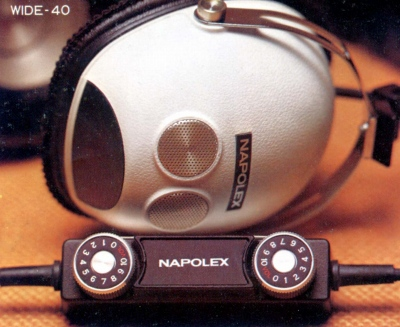
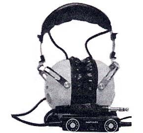

WIDE-40



■価格 5,800円■型式 ダイナミック型■振動板 67�o LWC式ダブルコーン■インピーダンス ■再生周波数帯域 20-20,000Hz■許容入力 500mW■感度 ■コード 4m 銅箔袋打ちコード■重量 350g（コード含まず）■発売 1971年頃■販売終了 1975年頃■備考 ボリュームコントロールボックス付外側が軟質プラスチック、内部が硬質プラスチックの二重構造プラグ採用
ナポレックスのインデックスへ